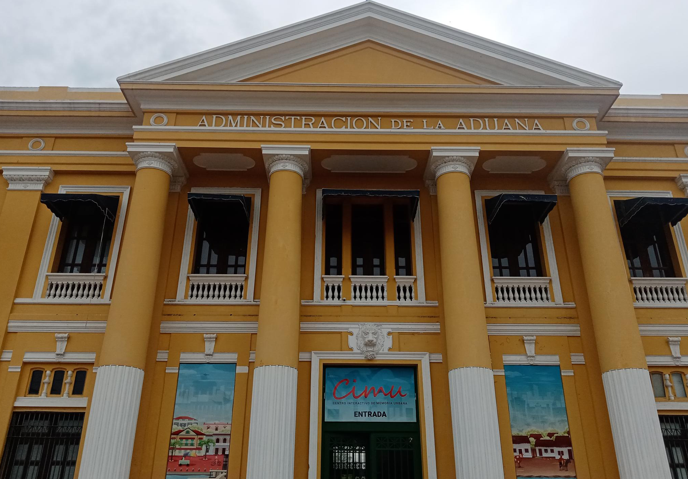

LA ADUANA



La aduana es una edificación perteneciente al período republicano que se caracteriza por su influencia neoclásica en su diseño y arquitectura. Inspirada en elementos clásicos como las columnas y frontones, esta construcción presenta una estética elegante. Su diseño se enfoca en la escala, el ritmo y la monumentalidad, buscando generar un impacto visual y simbólico en quienes la observan.
Es una columna de inspiración neoclásica, cuenta con una base, dos molduras a modo de collarín. Su fuste es combinado ya que la parte inferior es de tipo jónico con estrías acanaladas y la otra mitad es propio de la columna toscana que es lisa. Después presenta un collar con escudo de armas y una serie de pequeños canales que lo adornan, seguido de otro collar a manera de corona con motivos fitomorfos, y por último posee un equino cuadrado rematado con dos molduras delgadas.Este elemento arquitectónico remata con un arquitrabe de tres golpes.
Las manos que atizan los fogones y dan palote a las ollas, son de las mujeres y los hombres que por años han decidido rendir homenaje a su herencia culinaria. Son las vidas de familias que llegaron al barrio y desde entonces no han dejado de transformar los alimentos para cocinar singulares preparaciones, de aromas, colores y sabores que evocan, principalmente, lo afro en Barrio Abajo.
Siendo la ciudad de Barranquilla el más importante puerto de Colombia sobre el Caribe se instaló en el año 1849 la aduana. La creación de un puerto capaz de permitir el acceso de cruceros y trasatlánticos (Bocas de Ceniza), convirtió a la ciudad en la gran puerta del Caribe y en la tercera de mayor importancia económica del país. Por otro lado, con el desarrollo económico que se estaba presentando en Barranquilla, personajes notables llegaron al país entre los cuales se destaca al Ingeniero civil y eléctrico Leslie Olivier Arbouin Groom. El cual, hizo su arribo a Colombia en 1899 luego de ganar el concurso organizado por el Ministerio de Obras Públicas para sustituir el edificio de la aduana que se había quemado.
Este un Frontón clásico se encuentra soportado sobre un arquitrabe de tres secciones, utilizado también para colocarle el nombre al edificio. Es un elemento decorativo de inspiración neoclásica, para demarcar el acceso al edificio.
Esta abertura del edificio se encuentra rodeada por una moldura o jamba elaborada en yeso, en la parte baja tiene una balaustrada con remate de una pequeña cornisa que cuando se abren las ventanas hace las veces de balcón. Posee un parasol de lona de color azul para cortar el sol de la tarde.
La existencia y actual funcionamiento de este complejo cultural; el cual alberga en sus instalaciones a: la Biblioteca Piloto del Caribe, la Biblioteca Infantil Piloto del Caribe, el Archivo Histórico del departamento del Atlántico y el Centro de Documentación Musical Hans Federico Neuman; contribuye a la conservación y promoción de los valores culturales de la región, y a su vez estos espacios son utilizados para la realización de eventos, presentaciones, asambleas y reuniones.